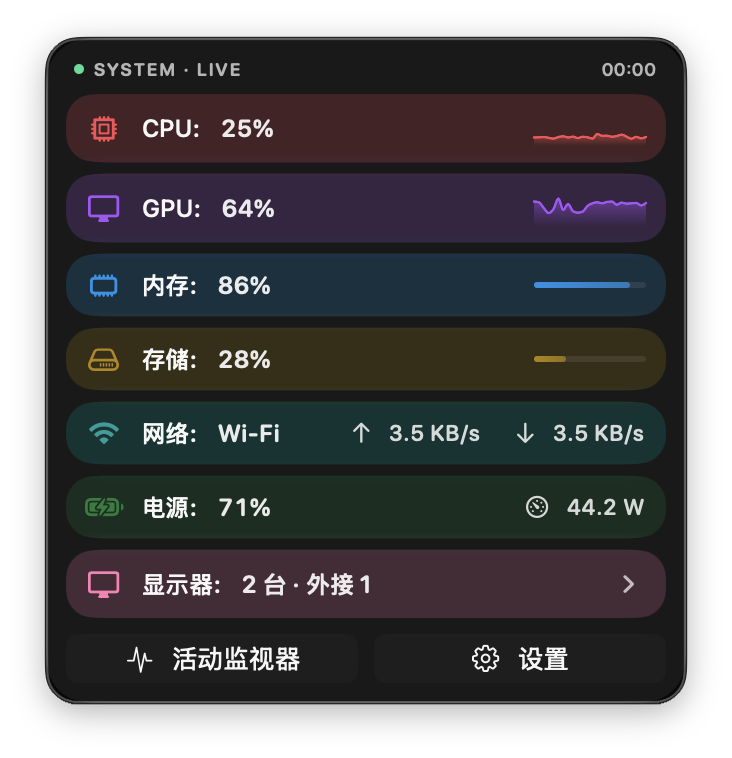
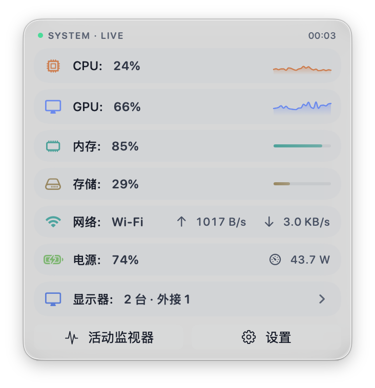
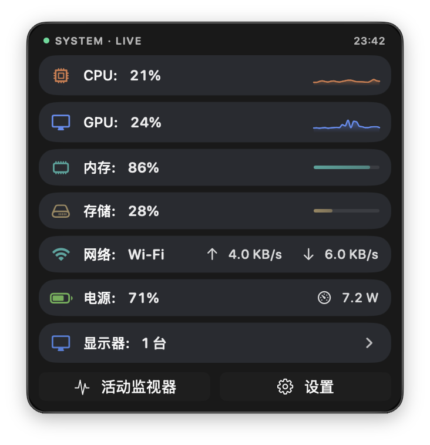
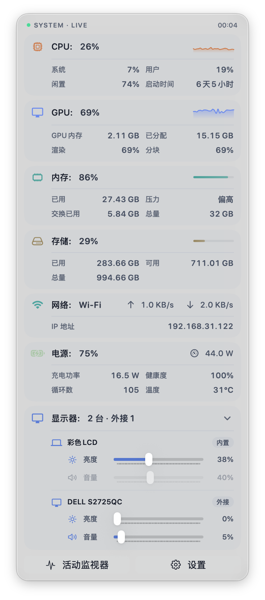

负载环
菜单栏图标实时反映系统压力，颜色从绿到橙到红，轻载、忙碌、高压一眼区分。
macOS 26+ / Apple Silicon
菜单栏图标实时显示负载，点击展开 CPU、GPU、内存、存储、网络、电池详情。常驻不到 30 MB，不占桌面空间。


从菜单栏负载到展开后的详细指标，番薯Monitor 适合长时间常驻，也适合在风扇升速、卡顿或外接设备异常时快速排查。
菜单栏图标实时反映系统压力，颜色从绿到橙到红，轻载、忙碌、高压一眼区分。
CPU、GPU、内存、存储、网络、电池各自独立采样，状态变化不用打开活动监视器。
CPU 与 GPU 使用率配有小型趋势图，短时间尖峰和持续高负载不会混在一起。
需要追原因时，可以展开查看核心分布、显存、内存压力、卷信息、IP 和电池健康。
平衡模式更安静，活力模式更醒目。两者都分别适配浅色和深色外观。
非 App Store 版本支持外接显示器亮度、音量、对比度调节，适配 DDC/CI 协议设备。
平衡模式更安静，活力模式更醒目。系统外观切换时，面板会跟随当前环境保持清晰可读。


Details
默认视图保留高频信息；点开模块后，再展示更细的排查数据。日常不占注意力，遇到问题时不用临时翻工具。

截图可能需要滚动查看完整内容
Star History
项目长期独立维护，每一颗 Star 都是继续打磨细节的理由。如果 番薯Monitor 对你有用，欢迎在 GitHub 留下一颗星。